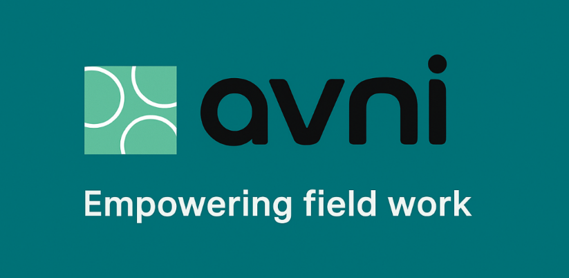
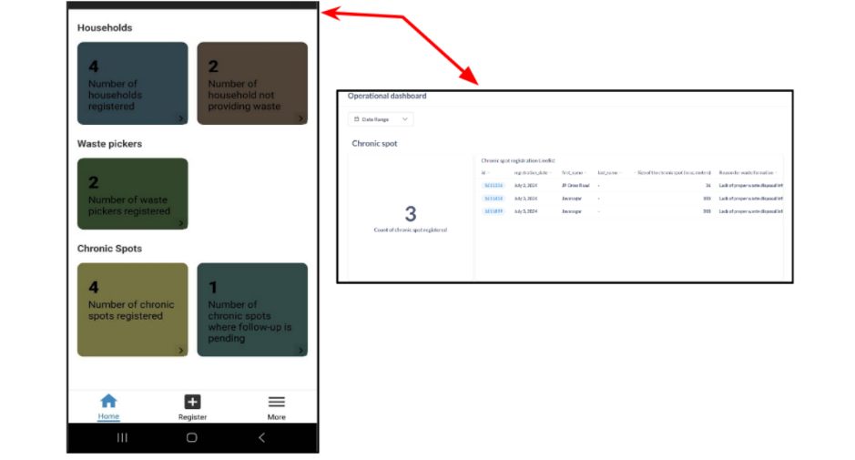

From Hands On to Hearts Touched: Our Last Day with Samanvay and Avni

Today marked our final day at Samanvay Foundation, and it felt like the perfect closure to a phase filled with learning, insight, and meaningful connections[cite: 58]. What made this day different was that it wasn't just about watching, it was about doing[cite: 58]. We didn't just hear about the Avni app, we used it, tested its features, and later, reflected deeply on its relevance through case studies and a conversation with co founder Arjun Khandelwal that felt more like a story than a session[cite: 58].
Hands On With the Avni App
The day began with a practical session[cite: 58]. We all downloaded the Avni app from the Play Store it's an Android only, offline first app, specially designed for use in low resource settings where iPhones are rare and internet is unreliable[cite: 58].

Each of us was given demo login credentials linked to a theme like mother and child care, health surveys, and nutrition programs, Waste management program[cite: 58].
I explored the dashboard under the "Waste management program" profile, which included:[cite: 59]
- Number of Households Registered[cite: 59]
- Number of household not providing Waste[cite: 59]
- Waste Pickers Registered[cite: 59]
- Chronic Spots Registered[cite: 59]
- Chronic Spots where follow up is Pending[cite: 59]
It could calculate things like Chronic spot registration Line list, Count of waste pickers registered, even remind workers of upcoming tasks[cite: 59]. It felt like a smart notebook[cite: 59].

Everything was stored offline and synced later when internet was available making the tool not just inclusive but field-practical[cite: 59].
Understanding the Design Philosophy
During our group conversation with Arjun, we learned how the idea behind Avni was born[cite: 60]. His story left a lasting impression on us[cite: 60].
Arjun studied computer engineering in Pune and worked with Thought works, where he first encountered social tech projects[cite: 60]. Eventually, frustrated by meaningless corporate assignments (like building betting software for retired foreigners), he went on a solo bike trip to Ladakh and it changed his life[cite: 60].
"I realized India is so beautiful, why am I chasing foreign dreams when I haven't explored my own country?"[cite: 60]
This led him to work with grassroots health organizations like Search (Gadchiroli) and Jan Swasthya Sahyog (Chhattisgarh)[cite: 60]. He saw the urgent need for better data systems in public health and realized that he could bring his tech skills to communities that needed them most[cite: 60].
Samanvay Foundation was born in 2016, and the Avni app (originally called OpenCHS) soon followed[cite: 60]. "Avni" means earth/land, and the name was chosen for its simplicity and resonance with field teams[cite: 60].
Avni's Features: Built With & For the Field
As we explored more about Avni's architecture and story, these standout features came up again and again:[cite: 60]
| Feature | Why It Matters |
|---|---|
| Offline-First | Essential for remote areas where internet is inconsistent[cite: 60] |
| Modular Design | Case management, survey tools, job aids, reporting, all customizable[cite: 60] |
| Multi-Tenancy | Each NGO sees their own app, dashboards, and forms, yet it runs on one platform[cite: 61] |
| Open Source | Free to adapt, extend, and improve encourages transparency and innovation[cite: 61] |
| Integrated Dashboards | Uses tools like Metabase and Superset for real-time data visualization[cite: 61] |
Avni is not a product, it's a platform and it adapts to whoever uses it[cite: 61].
Case Studies: From Theory to Impact
In the afternoon, we were assigned case studies related to Avni's real world deployments[cite: 61]. Each of us had to reflect on four key questions:[cite: 61]
- What real human problem is this technology solving?[cite: 61]
- What alternative tools could be used instead?[cite: 61]
- What unique value does Avni bring?[cite: 61]
- What are the possible risks or harms?[cite: 61]
My assigned case study was on the Classroom Observation Tool for Andhra Pradesh, it is a case study talks about how the state of Andhra Pradesh is trying to improve the quality of teaching in government schools[cite: 61].. Avni helped track field data, monitor issues, support real time reporting, and empower community participation[cite: 61]. Because of Avni, the program could respond faster to breakdowns and use data for planning[cite: 61].
Arjun's Personal Journey: From Code to Community
One of the most moving moments of the day was hearing Arjun's personal transformation[cite: 61]. He shared his experiences of seeing a 20-year-old tribal youth ready to give up his life over unaffordable treatment, and how that moment shaped his life's mission[cite: 61].
"Technology shouldn't serve power. It should serve people."[cite: 61]
From facing early salary cuts and funding hurdles to being recognized by the UN and the President of India, Arjun and his team have built something extraordinary[cite: 62]. Today, Avni is listed as a Digital Public Good, has been featured in the Economic Survey 2024-25, and continues to grow as a tool for digital equity and community empowerment[cite: 62].
A Memorable Farewell
As we wrapped up the day and presented our reflections, the Samanvay team gave each of us a simple gift a canvas bag with the message:[cite: 62]
Avni: Empowering Fieldwork[cite: 62]
That small gesture meant a lot[cite: 62]. It represented everything we'd seen: humility, utility, and impact[cite: 62].
Final Reflection
I walked into Samanvay curious about technology[cite: 62]. I walked out deeply aware of how tech, when built with care, can become a tool for dignity[cite: 62].
Avni isn't just an app[cite: 62]. It's a quiet revolution showing that data can empower, not extract[cite: 62].
Meeting Arjun, using the app ourselves, and discussing case studies reminded me that true impact comes from listening first, and building later[cite: 62].
Grateful for this experience[cite: 62]. Inspired for what comes next[cite: 62].
Note: All screenshots and field based content in this post have been documented with the informed consent of the Samanavy Office members and co founders involved in the demonstration[cite: 63]. These visuals are shared for academic and reflective learning purposes, and we remain committed to respecting the dignity, privacy, and efforts of those working at the grassroots[cite: 63].